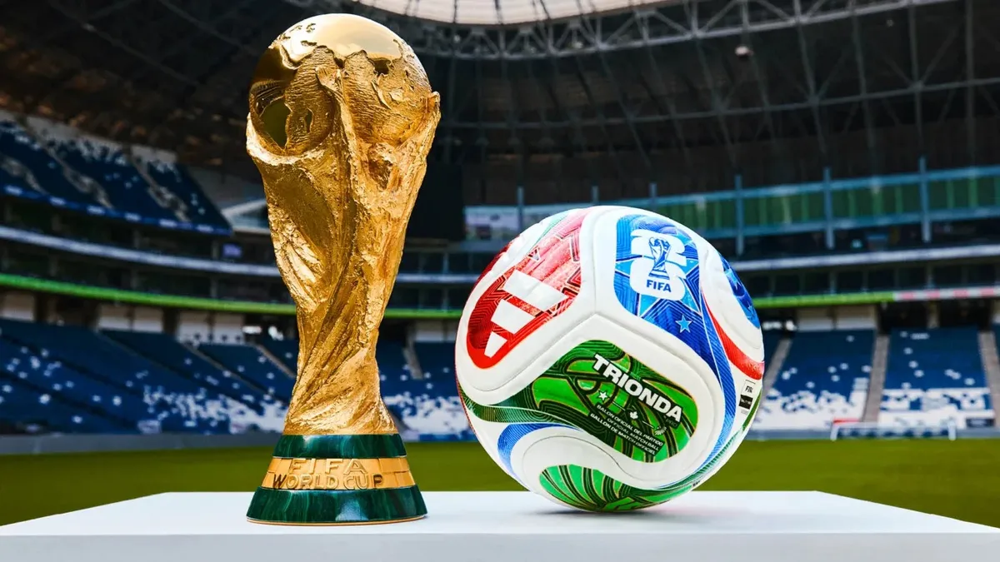
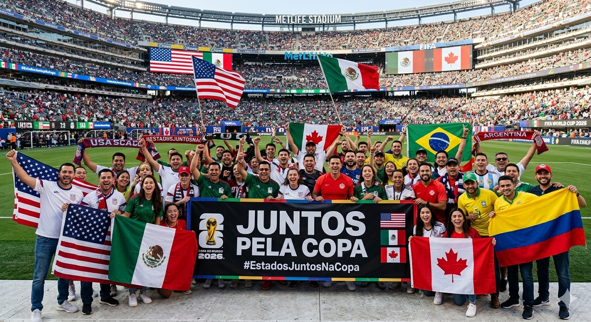

Copa do mundo 2026
Países Sedes

Estados Unidos

México

Canadá

A Copa do Mundo da FIFA é o maior evento de futebol do planeta, reunindo as melhores seleções de todos os continentes a cada quatro anos. Mais do que um torneio esportivo, ela é um phenomenon cultural que para o world, unindo nações, celebrando a diversidade e criando momentos históricos que duram para sempre.
Em 2026, o torneio será ainda mais monumental: pela primeira vez, contará com 48 seleções disputando o tão sonhado troféu, trazendo um nível de emoção e inclusão nunca antes visto na história do esporte.
Fazer Parte Dessa HistóriaOs Pilares do Novo Formato
Entenda o que torna esta edição uma das mais marcantes de todos os tempos:
A expansão para 48 seleções abriu portas para países que nunca haviam participado do torneio. Isso significa que novas culturas futebolísticas serão apresentadas ao planeta, enriquecendo a festa nas arquibancadas.
Dividir a responsabilidade entre três gigantes da América do Norte (EUA, México e Canadá) mostra o poder do futebol em derrubar fronteiras e promover a colaboração internacional em grande escala.
Com mais jogos na fase de grupos e uma nova fase eliminatória (dezesseis-avos de final), o torneio deve quebrar todos os recordes anteriores de público nos estádios e transmissões globais.
Três Nações, Um Só Destino
Pela primeira vez na história, três países se unem para sediar juntos a Copa do Mundo:

Sediando a maior parte dos jogos e a grande final.

O primeiro país a receber a Copa do Mundo pela terceira vez.

Estreando como anfitrião do torneio masculino.
Desde a sua primeira edição em 1930, no Uruguai, a Copa do Mundo moldou o esporte mundial. O Brasil continua sendo o maior vencedor da história do torneio, ostentando orgulhosamente suas duas estrelas no peito.
O México faz história nesta edição ao se tornar o único país do planeta a sediar jogos em três Copas diferentes (1970, 1986 e agora 2026). Enquanto isso, o Canadá expande sua tradição esportiva trazendo os jogos masculinos para suas modernas arenas pela primeira vez.
A maior quantidade de partidas da história do torneio.
Estádios de última geração espalhados por todo o continente.
De muita emoção, festa e paixão sem limites por futebol.
Crie sua Conta de Torcedor
Receba alertas de jogos, notícias exclusivas e monte seu álbum online!

Política de privacidade | Termos de Serviço
Direitos autorais © 1994-2026 FIFA. Todos os direitos reservados.